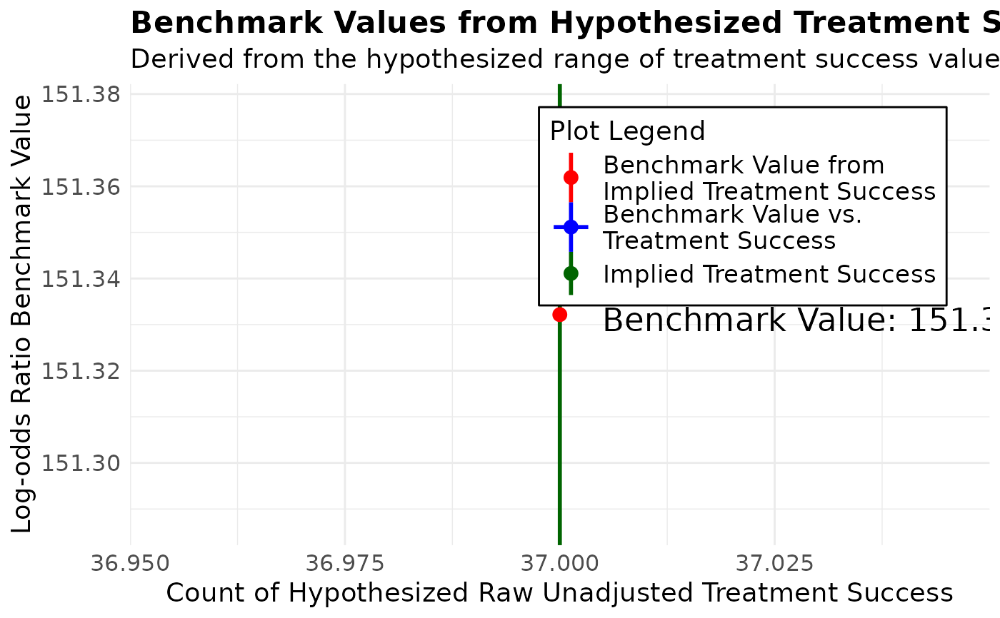

Performs sensitivity analysis on fitted models including linear models (`lm`), generalized linear models (`glm`), and linear mixed-effects models (`lmerMod`). It calculates the amount of bias required to invalidate or sustain an inference,and the impact of an omitted variable necessary to affect the inference.
Usage
konfound(
model_object,
tested_variable,
alpha = 0.05,
tails = 2,
index = "RIR",
to_return = "print",
two_by_two = FALSE,
n_treat = NULL,
switch_trm = TRUE,
replace = "control"
)Arguments
- model_object
A model object produced by `lm`, `glm`, or `lme4::lmer`.
- tested_variable
Variable associated with the coefficient to be tested.
- alpha
Significance level for hypothesis testing.
- tails
Number of tails for the test (1 or 2).
- index
Type of sensitivity analysis ('RIR' by default).
- to_return
Type of output to return ('print', 'raw_output', 'table').
- two_by_two
Boolean; if `TRUE`, uses a 2x2 table approach for `glm` dichotomous variables.
- n_treat
Number of treatment cases (used only if `two_by_two` is `TRUE`).
- switch_trm
Boolean; switch treatment and control in the analysis.
- replace
Replacement method for treatment cases ('control' by default).
Examples
# using lm() for linear models
m1 <- lm(mpg ~ wt + hp, data = mtcars)
konfound(m1, wt)
#> Robustness of Inference to Replacement (RIR):
#> RIR = 21
#>
#> To nullify the inference of an effect using the threshold of -1.294 for
#> statistical significance (with null hypothesis = 0 and alpha = 0.05), 66.629%
#> of the (-3.878) estimate would have to be due to bias. This implies that to
#> nullify the inference one would expect to have to replace 21 (66.629%)
#> observations with data points for which the effect is 0 (RIR = 21).
#>
#> See Frank et al. (2013) for a description of the method.
#>
#> Citation: Frank, K.A., Maroulis, S., Duong, M., and Kelcey, B. (2013).
#> What would it take to change an inference?
#> Using Rubin's causal model to interpret the robustness of causal inferences.
#> Education, Evaluation and Policy Analysis, 35 437-460.
#>
#> Accuracy of results increases with the number of decimals reported.
#> NULL
konfound(m1, wt, to_return = "table")
#> Dependent variable is mpg
#> For interpretation, check out to_return = 'print'.
#> X represents wt, Y represents mpg, v represents each covariate.
#> First table is based on unconditional correlations, second table is based on
#> partial correlations.
#>
#> $Main_Output
#> # A tibble: 3 × 6
#> term estimate std.error statistic p.value itcv
#> <chr> <dbl> <dbl> <dbl> <dbl> <dbl>
#> 1 (Intercept) 37.2 1.60 23.3 0 NA
#> 2 wt -3.88 0.633 -6.13 0 0.291
#> 3 hp -0.032 0.009 -3.52 0.001 0.511
#>
#> $Unconditional_Impact
#> # A tibble: 1 × 4
#> term `Cor(vX)` `Cor(vY)` Impact
#> <chr> <dbl> <dbl> <dbl>
#> 1 hp 0.659 -0.776 -0.511
#>
#> $Partial_Impact
#> # A tibble: 1 × 4
#> term `Partial Cor(vX)` `Partial Cor(vY)` Partial_Impact
#> <chr> <dbl> <dbl> <dbl>
#> 1 hp 0.659 -0.776 -0.511
#>
# using glm() for non-linear models
if (requireNamespace("forcats")) {
d <- forcats::gss_cat
d$married <- ifelse(d$marital == "Married", 1, 0)
m2 <- glm(married ~ age, data = d, family = binomial(link = "logit"))
konfound(m2, age)
}
#> Note that if your model is a logistic regression, we recommend using the pkonfound command for logistic regression with manually entered parameter estimates and other quantities.
#> Note that this is only an approximation. For exact results in terms of the number of cases that must be switched from treatment success to treatment failure to invalidate the inference see: https://msu.edu/~kenfrank/non%20linear%20replacement%20treatment.xlsm
#> If a dichotomous independent variable is used, consider using the 2X2 table approach enabled with the argument two_by_two = TRUE
#> Warning: Due to an issue with the margins and predictions package, these are the raw coefficients, not the average marginal effects; we will address this in future patches
#> Robustness of Inference to Replacement (RIR):
#> RIR = 17983
#>
#> To nullify the inference of an effect using the threshold of 0.002 for
#> statistical significance (with null hypothesis = 0 and alpha = 0.05), 84.006%
#> of the (0.01) estimate would have to be due to bias. This implies that to
#> nullify the inference one would expect to have to replace 17983 (84.006%)
#> observations with data points for which the effect is 0 (RIR = 17983).
#>
#> See Frank et al. (2013) for a description of the method.
#>
#> Citation: Frank, K.A., Maroulis, S., Duong, M., and Kelcey, B. (2013).
#> What would it take to change an inference?
#> Using Rubin's causal model to interpret the robustness of causal inferences.
#> Education, Evaluation and Policy Analysis, 35 437-460.
#>
#> Accuracy of results increases with the number of decimals reported.
#> NULL
# using lme4 for mixed effects (or multi-level) models
if (requireNamespace("lme4")) {
library(lme4)
m3 <- fm1 <- lme4::lmer(Reaction ~ Days + (1 | Subject), sleepstudy)
konfound(m3, Days)
}
#> Loading required package: Matrix
#> Robustness of Inference to Replacement (RIR):
#> RIR = 137
#>
#> To nullify the inference of an effect using the threshold of 1.588 for
#> statistical significance (with null hypothesis = 0 and alpha = 0.05), 84.826%
#> of the (10.467) estimate would have to be due to bias. This implies that to
#> nullify the inference one would expect to have to replace 137 (84.826%)
#> observations with data points for which the effect is 0 (RIR = 137).
#>
#> See Frank et al. (2013) for a description of the method.
#>
#> Citation: Frank, K.A., Maroulis, S., Duong, M., and Kelcey, B. (2013).
#> What would it take to change an inference?
#> Using Rubin's causal model to interpret the robustness of causal inferences.
#> Education, Evaluation and Policy Analysis, 35 437-460.
#>
#> Accuracy of results increases with the number of decimals reported.
#> Note that the Kenward-Roger approximation is used to
#> estimate degrees of freedom for the predictor(s) of interest.
#> We are presently working to add other methods for calculating
#> the degrees of freedom for the predictor(s) of interest.
#> If you wish to use other methods now, consider those detailed here:
#> https://bbolker.github.io/mixedmodels-misc/glmmFAQ.html
#> #why-doesnt-lme4-display-denominator-degrees-of-freedomp-values-what-other-options-do-i-have.
#> You can then enter degrees of freedom obtained from another method along with the coefficient,
#> number of observations, and number of covariates to the pkonfound() function to quantify the robustness of the inference.
#> NULL
m4 <- glm(outcome ~ condition, data = binary_dummy_data, family = binomial(link = "logit"))
konfound(m4, condition, two_by_two = TRUE, n_treat = 55)
#> Robustness of Inference to Replacement (RIR):
#> RIR = 15
#> Fragility = 10
#>
#> You entered: log odds = 1.527, SE = 0.415, with p-value = 0.000.
#> The table implied by the parameter estimates and sample sizes you entered:
#> Fail Success Success_Rate
#> Control 36 16 30.77%
#> Treatment 18 37 67.27%
#> Total 54 53 49.53%
#>
#> Values in the table have been rounded to the nearest integer. This may cause
#> a small change to the estimated effect for the table.
#>
#> To nullify the inference that the effect is different from 0 (alpha = 0.050), one would
#> need to transfer 10 data points from treatment success to treatment failure (Fragility = 10).
#> This is equivalent to replacing 15 (40.541%) treatment success data points with data points
#> for which the probability of failure in the control group (69.231%) applies (RIR = 15).
#>
#> Note that RIR = Fragility/P(destination) = 10/0.692 ~ 15.
#>
#> The transfer of 10 data points yields the following table:
#> Transfer Table:
#> Fail Success Success_Rate
#> Control 36 16 30.77%
#> Treatment 28 27 49.09%
#> Total 64 43 40.19%
#>
#> The log odds (estimated effect) = 0.775, SE = 0.404, p-value = 0.058.
#> This p-value is based on t = estimated effect/standard error
#>
#> Benchmarking RIR for Logistic Regression
#> The benchmark value helps interpret the RIR necessary to nullify an inference by comparing
#> the change needed to nullify the inference with the changes in the estimated effect due to
#> observed covariates. Currently this feature is available only when the reported results are
#> statistically significant.
#>
#> The benchmark is used to compare the bias needed to nullify the inference / bias reduction due
#> to observed covariates. Specifically, change in data from implied to transfer table / change in
#> data from unconditional table to implied table
#>
#> To calculate this benchmark value, a range of treatment success values is automatically
#> generated based on the assumption that the marginals are constant between the implied table
#> and the raw unadjusted table. The benchmark value is visualized as a graph, allowing the
#> user to interpret how the benchmark changes with hypothesized treatment success values.
#>
#> To calculate a specific benchmark value, locate the number of treatment successes in the raw data
#> on the graph below.
#>
#> `geom_line()`: Each group consists of only one observation.
#> ℹ Do you need to adjust the group aesthetic?

#> See Frank et al. (2021) for a description of the methods.
#>
#> *Frank, K. A., *Lin, Q., *Maroulis, S., *Mueller, A. S., Xu, R., Rosenberg, J. M., ... & Zhang, L. (2021).
#> Hypothetical case replacement can be used to quantify the robustness of trial results. Journal of Clinical
#> Epidemiology, 134, 150-159.
#> *authors are listed alphabetically.
#>
#> Accuracy of results increases with the number of decimals entered.
#> NULL